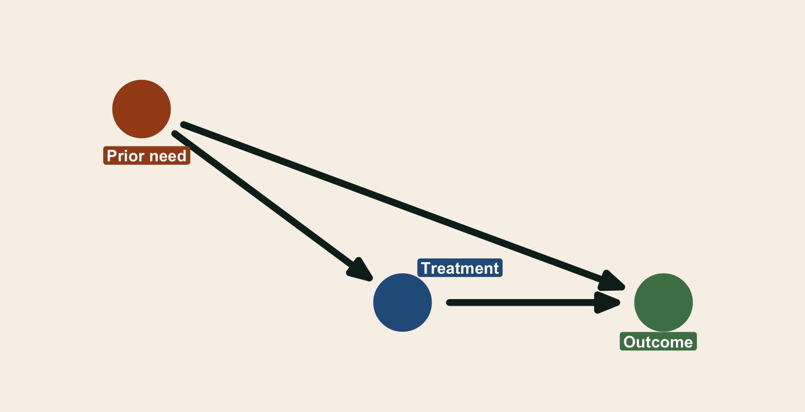
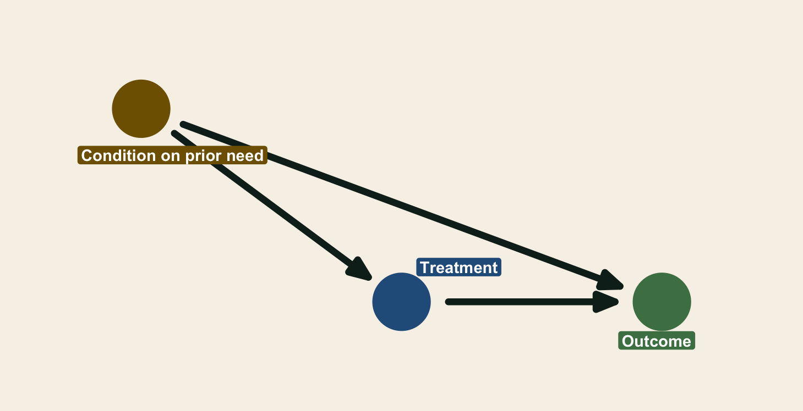
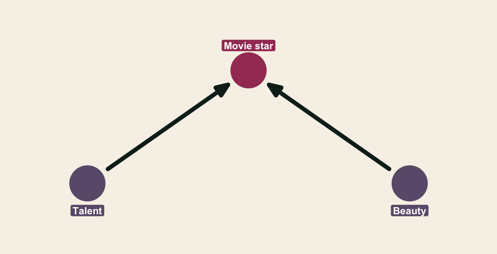

A causal-inference deck on confounding, comparability, and design
2026-03-09
This short deck explains why matching exists before it explains any specific matching algorithm.
| Time | Segment | Purpose |
|---|---|---|
0-4 |
Counterfactual problem | Why causal inference needs a comparison group |
4-8 |
Benchmark comparison | Why randomization is the clearest comparison |
8-12 |
Confounding | Why raw observational comparisons fail |
12-16 |
Matching logic | What matching is trying to repair |
14-18 |
Assumptions and limits | What matching cannot do |
18-20 |
Practical takeaway | How to use matching responsibly |
Observed outcome
What happened under the treatment state actually received.
Missing outcome
What would have happened under the alternative treatment state.
Design task
Build a comparison group that is credible enough to stand in for the missing outcome.
RCTs are the clearest benchmark for causal comparison qualityRCTs are a benchmark, not magic: attrition, noncompliance, and external validity still matter (Heiss 2026)lalondeMatchIt::lalonde, built from the National Supported Work training study with a non-experimental comparison groupWe use lalonde because it is not just convenient. It is a benchmark dataset for asking whether an observational design can get back to something close to the experimental answer.

Figure 1
D <- X -> YPrior need is a common cause of treatment and outcomePrior need1, the raw outcome gap is confoundedPrior need raises or lowers the outcome
Figure 2
Matching is useful because imbalance creates model dependence.
Visible comparisons
The analyst has to show who is being compared to whom.
Less hidden extrapolation
The design leans less on functional-form assumptions alone.
Explicit diagnostics
Balance, overlap, retention, and weights become reportable design costs.
1. Preprocess the design
2. Estimate on the redesigned data

Figure 3
Movie star, you can create a spurious association between Talent and Beauty| Problem | What matching tries to improve |
|---|---|
| Baseline imbalance | More comparable treated and control units |
| Opaque regression dependence | A clearer comparison rule |
| Weak visibility on overlap | Explicit evidence on where support fails |
| Hidden design costs | Retention and weighting costs that can be reported plainly |
Regression
Compares outcomes conditional on observed covariates.
Matching
Builds more comparable treated-control pairs or samples first.
Stratification and weights
Take within-cell differences and aggregate them with weights.
All are trying to estimate causal contrasts after blocking backdoor paths with observed covariates.
Conditional independence
No important unmeasured confounders remain after conditioning.
Common support
Comparable treated and untreated units must exist.
Balance
Observed covariates should actually look similar after adjustment.
Stable estimand
The design should still answer the question you started with.
RDD, DiD, or randomized design is availableWe focus on
We do not center
MatchIt method menu on a first passThis narrower scope keeps the design rule visible. For the broader implementation menu, see the MatchIt documentation.
We do matching to reduce observed confounding by building a more credible comparison group, while remaining honest that causality still depends on assumptions the data cannot prove.